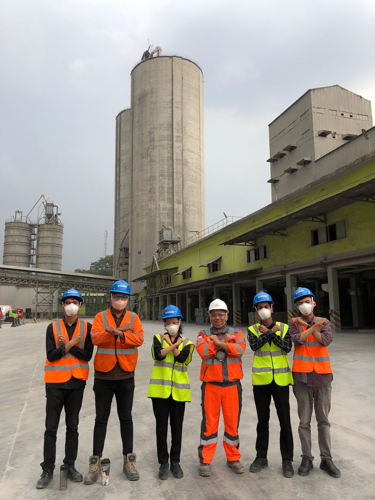
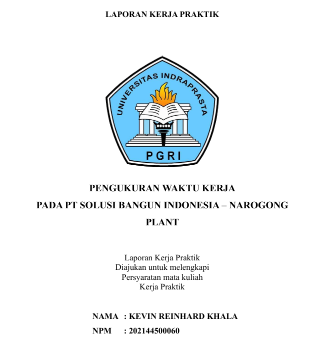

Production Intern


PT. Solusi Bangun Indonesia Tbk - Narogong plant
September 2024
Kab Bogor, Indonesia
Responsibilities:
September 2024
Kab Bogor, Indonesia
Responsibilities:
- Actively learning and observing the entire flow of the cement production process, field observation, conducting direct observation (plant tour) in each area of the main production unit (Quarry, Reclaimer, Raw Mill, Kiln, Cement Mill, Pack House) to understand machine functions and material flow.
- Learned and understand material flow and machine functions in the cement production process.
- Learned OHS induction regarding LOTO and lifting and rigging
Lessons that delivered specially about time work analysis & manufacturing process